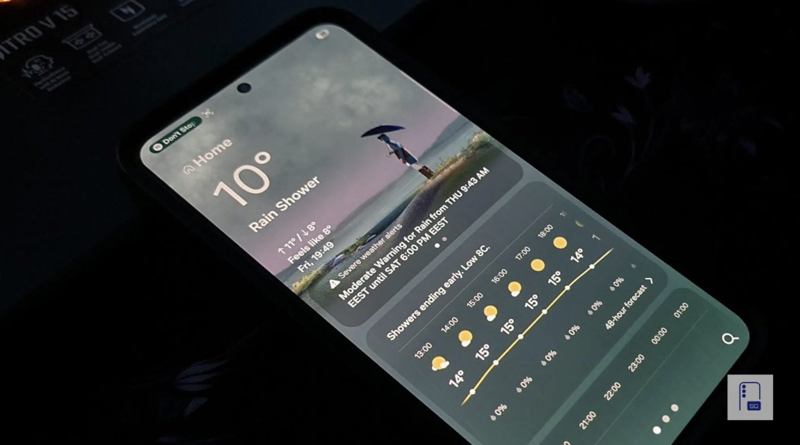

新闻 · 2026-11-21 18:00
代码显示三星正为 One UI 9.5 开发 AI 智能天气提醒功能：可根据用户作息与通勤时间推送通知
三星在 One UI 9.5 测试版中开发 AI 智能天气提醒功能，可依据用户起床与通勤时间自动推送天气信息，该功能依赖 Personal Data Intelligence 系统分析本地位置数据，并向 The Weather Channel 提供经纬度以获取天气服务，预计于明年年初 Galaxy S27 系列发布时上线。

来源与核验
单一信源报道，未交叉核实